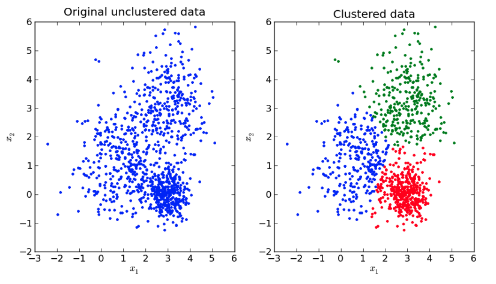
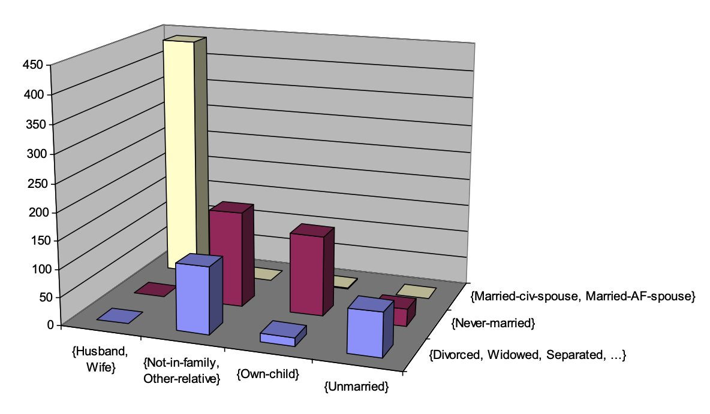
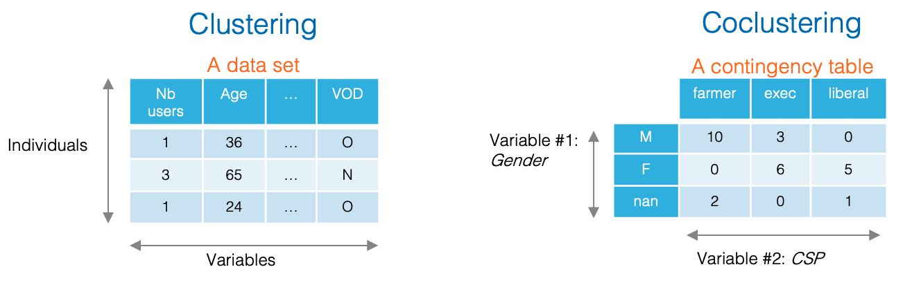
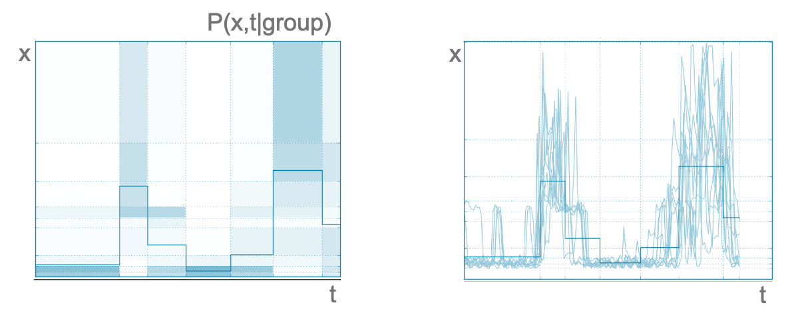
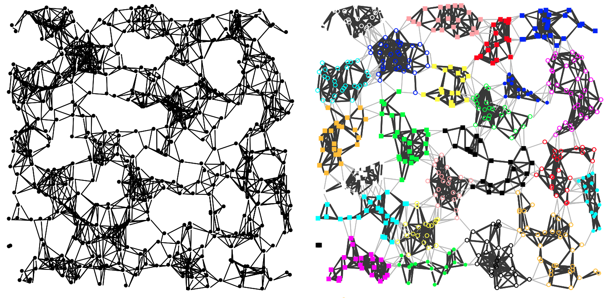
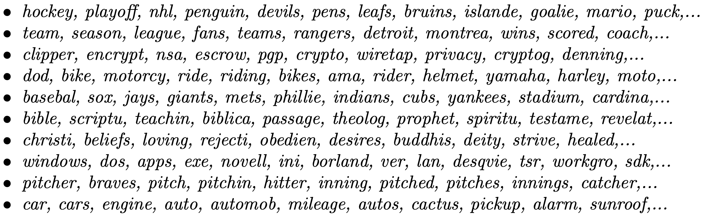
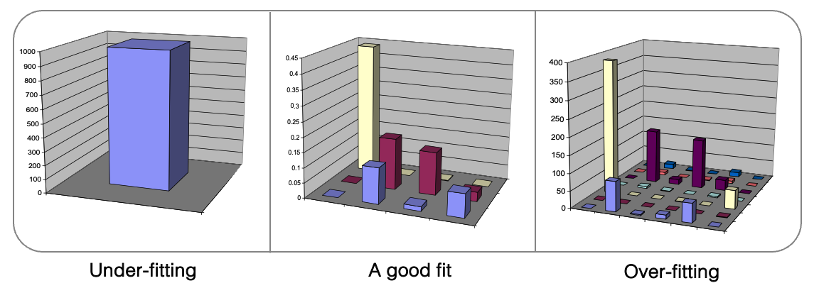
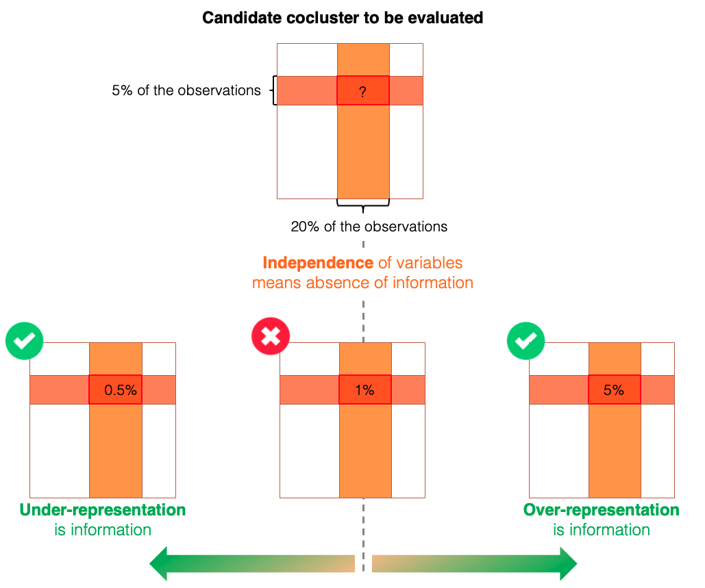
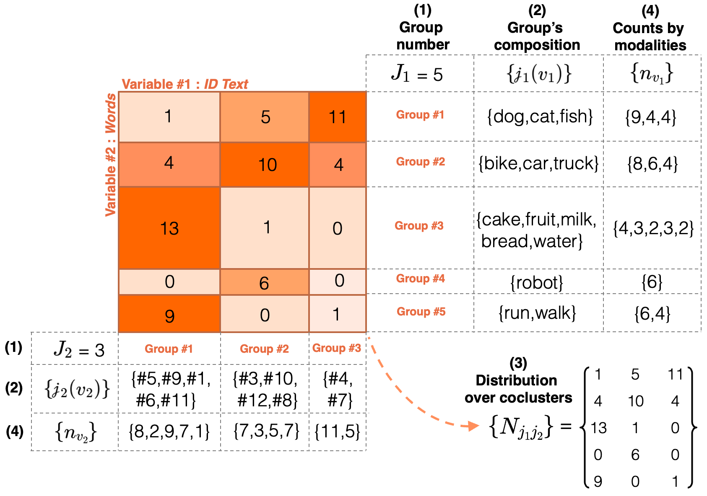
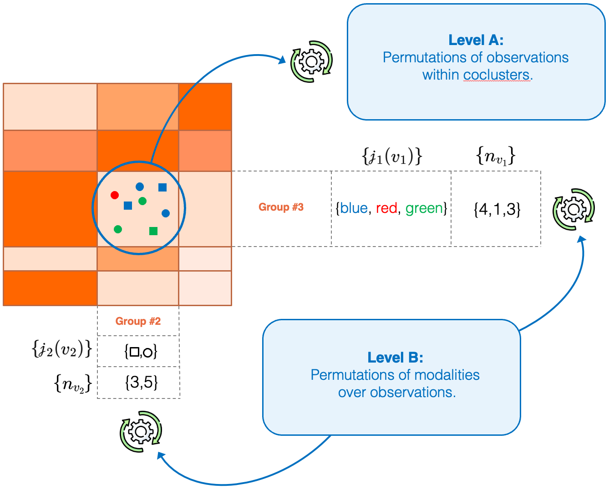

Coclustering
This is not clustering
Among unsupervised approaches, clustering algorithms are undoubtedly the best known. But don't be fooled, coclustering is a very different problem. To clarify the distinction between clustering and coclustering, let's start by distinguishing their respective objectives.
Objective of clustering
Group the rows of a data set into homogeneous groups of instances.

As shown in this figure, clustering algorithms are used to find homogeneous subpopulations within a data set. These algorithms are generally based on a distance, which can take various forms and which is used to identify clusters: (i) as far away as possible from each other; (i) whose instances are as close as possible to each other. In practice, the choice of this distance has a significant impact on clustering results, as it constitutes a kind of a priori knowledge used to simplify the problem and make algorithms computationally efficient. It should also be noted that clustering algorithms generally involve choosing the number of clusters to be formed, with no guarantee that there are actually identifiable sub-populations in the dataset.
Objective of coclustering
Group rows and columns of a matrix to study the dependency between its two dimensions.

Coclustering algorithms simultaneously group the rows and columns of a matrix, usually a contingency matrix describing the co-occurrences of two categorical variables. This contingency matrix contains the number of instances for each pair of modalities of the two categorical variables studied. The intersection (i.e. the cartesian product) of the groups formed on the two dimensions of the matrix constitute a set of coclusters (represented by the bins in the figure above). A cocluster characterizes a sub-part of the matrix by aggregating the information it contains, i.e. the number of instances whose modality pair of the two variables belongs to the cocluster. Finally, a coclustering model gives an aggregated view of a contingency matrix describing the dependency between the two variables under study, and it can be seen as a model of the joined density of the two variables.
What you need to know
Like clustering, coclustering is a powerful tool for exploratory analysis, but these two types of approach apply to different kinds of data (as shown in the figure below) and their objectives are not the same.

A wide range of applications
The coclustering problem is also known as biclustering, because only two dimensions of the input matrix are involved. As such, coclustering is a relatively limited problem, restricted to the study of two categorical variables.
MODL generalizes coclustering
- Extension to numerical variables.
- Mixing numerical and categorical variables.
- Generalization to more than two variables.
Thanks to the extensions allowed by the MODL formalism, coclustering can be applied to a large range of applications involving data of very different kinds. Here are just a few examples:
- Time series can be studied using Khiops coclustering by encoding each measurement of the series with the following three variables: (i) the identifier of the time series (id: categorical); (ii) a time variable representing the time of day (t: numerical); (iii) the measurement value (x: numerical); . In this case, the coclustering algorithm discretizes the three dimensions jointly, clustering time series on the id dimension, and forming intervals of values on the other two dimensions t and x. The following figure shows an example of a group formed using household electricity consumption, which is a very chaotic kind of time series. Each group of series is then represented by a joint density describing the distribution of measurements as a function of time (left-hand side of the figure below). Being very chaotic, the time series belonging to this group would have been considered far from each other by a clustering algorithm based on a distance, such as the Euclidean distance (right-hand side of the figure below). Finally, this example illustrates one of the advantages of Khiops coclustering, which does not require a priori choosing a distance function.

- Graphs are an expressive form of data, which can be employed to describe complex systems such as a telecom network, by encoding the interactions between each of the devices that make it up, or the customers of a telephone operator, by characterizing the interactions between users. Khiops coclustering is an excellent tool for exploring the structure of large graphs. For example, the arcs of a directed graph can be encoded by the following two categorical variables: (i) the identifier of the source node; (ii) and the identifier of the target node. In this case, the coclustering algorithm jointly builds groups of source nodes and groups of target nodes, describing the joint density of oriented arcs. The following figure shows an example of how Khiops coclustering can be used to partition a graph. It's important to note that Khiops identifies both groups of nodes that are strongly connected to each other, and groups of nodes in which the interconnections are abnormally weak compared to the rest of the graph. By extension, temporal graphs can also be studied by the Khiops coclustering, simply by adding a third time variable to the description of the arcs. For example, daily self-service bicycle trips were studied in the city of London.

- Textual data can also be analyzed using coclustering, especially to uncover relationships between documents and the words they contain. For example, in a collection of documents, each word can be encoded by two categorical variables: (i) the identifier of the document to which it belongs, and (ii) the word itself. The coclustering algorithm then simultaneously groups sets of documents and sets of words, revealing both underlying themes or topics and document groups that share common vocabulary, while also highlighting the words that characterize each group. Unlike traditional clustering algorithms, Khiops coclustering does not require predefining the number of topics and document groups, nor even a distance between texts (only the co-occurrence of words in texts matters). It is particularly useful for exploring large text collections, such as scientific articles, forums, or social media data, providing a structured and intuitive view of the relationships between content and vocabulary. The following list shows examples of word groups from a coclustering model trained on a public dataset (see this paper). It is noticeable that the formed groups are semantically homogeneous:

Intuitions
How is the best model selected?
Even for unsupervised approaches, MODL avoids overfitting by selecting the most probable model given the data.

Like other algorithms based on the MODL (Minimum Description Length) approach, coclustering involves selecting the most probable model given the data. During training, a trade-off is made to select the best model. On one hand, overly detailed models are discarded because they tend to overfit, capturing noise rather than significant patterns (right side of the figure above). On the other hand, coarse models are avoided because they underfit, missing important dependencies between variables (left side of the figure above).
The optimization criterion used to navigate this trade-off combines two antagonistic components:
- Prior: penalizes complex models to prevent overfitting, thanks to its hierarchical and uniform structure.
- Likelihood: plays the opposite role by favoring models that accurately describe the data.
The most probable model represents a balance point between these opposing objectives, allowing it to properly explain the data — i.e., the dependencies between variables — without unnecessary complexity or overfitting risk. This automatic model selection is entirely driven by the optimization criterion, without requiring the user to specify the number of coclusters which is deduced from data. More generally, MODL coclustering is hyper-parameter free and does not rely on a predefined distance measure, avoiding biases that could influence the results.
What is a valuable cocluster in MODL's eyes?
Coclustering models describe how data deviate from the independence assumption.
Coclustering models aim to describe how the training data deviate from the assumption of independence between variables. Coclusters are formed to capture sub-parts of data that are either over-represented or under-represented relative to this independence hypothesis. The likelihood term of the MODL optimization criterion seeks to maximize this contrast, effectively highlighting dependencies and structures that differ from what would be expected under independence. Conversely, the prior term ensures robustness and prevents overfitting by penalizing overly complex models.
The figure below illustrates when a cocluster provides valuable information within a coclustering model. Consider a candidate cocluster formed by (i) a group of rows representing 5% of the observations and (ii) a group of columns representing 20%. Under the independence assumption, the expected number of observations in this cocluster would be 1% (calculated by multiplying the probabilities of belonging to each group). If the observed count in this cocluster deviates from this expectation — either over-represented or under-represented — it indicates that forming this cocluster captures meaningful information about the relationship between the variables described by the model.

The MODL formalism offers a number of guarantees for data exploration
- No choice of group number by the user.
- Guarantee of no grouping in case of independence of variables.
- Guarantee against overfitting.
- No predefined distance, only co-occurrences guide model optimization.
Model parameters
The rest of this page presents the coclustering approach in the simple case of two categorical variables. For the processing of numerical variables and cases where there are more than two variables, you can refer for example to this article. Here, the aim is to jointly group the modalities of two categorical variables in an optimal way, in order to model their dependency. A coclustering model \(h\) is entirely defined by the following parameters:
- \(J_1\) and \(J_2\) the number of groups for each variable,
- \(\{\mathscr{j}_1(v_1)\}\) and \(\{\mathscr{j}_2(v_2)\}\) the group indexes containing the modalities \(v_1\) and \(v_2\) of both variables,
- \(\{N_{j_1 j_2}\}\) the observations counts within each cocluster of the model,
- \(\{n_{v_1}\}\) and \(\{n_{v_2}\}\) the observations counts for each modality of both variables.
The figure above shows an example of a coclustering model describing the dependency of two variables, the first representing text identifiers and the second words. This figure details all the parameters that define the coclustering model.

The role of each parameter can be easily interpreted:
- the first parameter corresponds to the group number on the two variables,
- the second parameter defines the group composition on the two dimensions,
- the third parameter describes how the observations are distributed across the model's coclusters,
- the last parameter encodes the modality count information of the original variables.
Parameter consistency
The sum of the counts by modality \(\{n_{v_1}\}\) equals the sum of the counts by cocluster \(\{N_{j_1 j_2}\}\), both across rows and columns. For example, the first row in the figure above represents a group of three words: \(\{dog,cat,fish\}\). The counts for each modality are as follows, \(dog: 9\), \(cat: 4\), \(fish: 4\). Their total (\(9 + 4 + 4 = 17\)) matches the sum of the counts by cocluster in that row (\(1 + 5 + 11 = 17\)).
Optimization criterion
The core of the coclustering approach is its optimization criterion, rooted in the MODL formalism. Its purpose is to identify the most probable model given the training data, denoted by \(d\). Building on the concepts introduced in the Original Formalism section and referring to information theory (and more specifically to the MDL principle), this criterion can be expressed as:
where \(L(h)\) is the description length of the model (the prior) and \(L(d|h)\) the description length of the training data given the model (the likelihood). Given the model parameters introduced above, the optimization criterion used to select the most probable coclustering model can be formalized as follows.
The prior:
As with all MODL criteria, the a priori distribution of the models is uniform and hierarchical. The model parameters follow a four-level hierarchy (A,B,C,D), with the number of options at each level determined by the choices made at the previous levels:
The distribution of parameters can be decomposed as follows.
- First level: \(P(A)\) is a uniform prior over the number of groups \(J_1, J_2\) for each variable. Since the original variables have \(V_1\) and \(V_2\) modalities respectively, the choices of these parameters are independent, and all choices are equally probable, we have:
- Second level: \(P(B|A)\) is a uniform prior over the partitioning of each variable's modalities into \(J_1\) and \(J_2\) groups. The function \(B(V, J)\) counts the number of ways to partition \(V\) values into \(J\) (possibly empty) groups, defined as a sum of Stirling number of the second kind, such that \(B(V, I) = \sum^I_{i=1} S(V, i)\). Assuming all partitions are equiprobable, the probability of a specific partition is:
- Third level: \(P(C|A,B)\) is a uniform prior on the distribution of observations across the model's coclusters. The total number of ways to distribute \(N\) observations into \(J_1.J_2\) coclusters is given by the following denominator term:
- Fourth level: \(P(D|A,B,C)\) is a uniform prior over how observations are assigned to the original variables modalities. For each group of both variables, the number of ways to distribute \(N_{j_i}\) observations over \(m_{j_i}\) modalities is enumerated, such that:
From an information theory perspective, this prior relates to the coding length \(L(h)\) needed to describe the model. As a reminder, the minus logarithm is used in this context to transform the probability into quantity of information. Thus, the sum of levels 1, 2, 3 and 4 finally expressed a product of independent probabilities corresponding to successive choices at each level:
It is also important to note that the prior assesses the probability of hypotheses \(h\) based on the combinatorial space of possible coclustering models, regardless of the training data. Simpler models, with fewer groups, are favored because increasing the number of groups expands the space of possible group compositions as well as the potential distributions of observations across the coclusters, thereby reducing the model's prior probability.
The likelihood:
The likelihood term estimates the probability of the observed training data given the parameters of a candidate coclustering model. Intuitively, estimating \(p(d|h)\) involves counting all datasets compatible with the model's parameters and assuming that these datasets are equally probable. This corresponds to a two-level multinomial problem (see the following figure).
- Level A counts the number of distinct ways to permute the \(N\) observations within the coclusters, each containing \(N_{J_1 J_2}\) observations.
- Level B counts the number of distinct ways to permute the modalities within each group for the observations belonging to those groups, considering the two variables independently.
The optimization of the likelihood aims to describe as precisely as possible the dependency structure between the two variables by minimizing the number of possible datasets consistent whith the model's parameters (i.e. counted by the permutations of levels A and B).

Thus, the likelyhood can be written as follows:
In information theory, likelihood is related to the coding length \(L(d|h)\) needed to describe the training data, assuming the model is known:
Optimization Algorithm
The goal of this algorithm is to find the best co-clustering mode by minimizing the optimization criterion. However, the number of candidate models increases exponentially with the size of the training data, making exhaustive exploration non-tractable. Consequently, the presented algorithm is a heuristic designed to find a high-quality approximate solution within a reasonable amount of time.
The following figure gives an overview of the step-by-step operation of this algorithm, for further details please refer to this paper.
- Initialization: a “fine” model is randomly drawn, setting the number of groups for each variable so that coclusters contain an average of one instance.
- Step A: a fast optimization is performed alternately for each variable, i.e. by freezing the other partition, the optimization criterion becomes univariate and the same algorithm as for optimal encoding is used.
- Step B: next, a greedy algorithm merges the groups that degrade the optimization criterion as least as possible, until a single cocluster is obtained. The best evaluated model is selected for the next step.
- Step C: similarly to step A, an in-depth alternate optimization is performed (i.e. with more iterations).
- Exploration: in order to combat local optima, the current solution is randomly split and steps A, B and C are repeated. The number of random splits added to the current solution increases if the model does not improve (i.e. using the Variable Neighborhood Search algorithm).
- Stop: the algorithm stops when the model has not improved for too long.
An anytime algorithm
The coclustering optimization algorithm is implemented in an anytime manner, meaning that a new version of the model is saved each time an improvement is found. The longer the algorithm runs, the more finely optimized the model becomes.